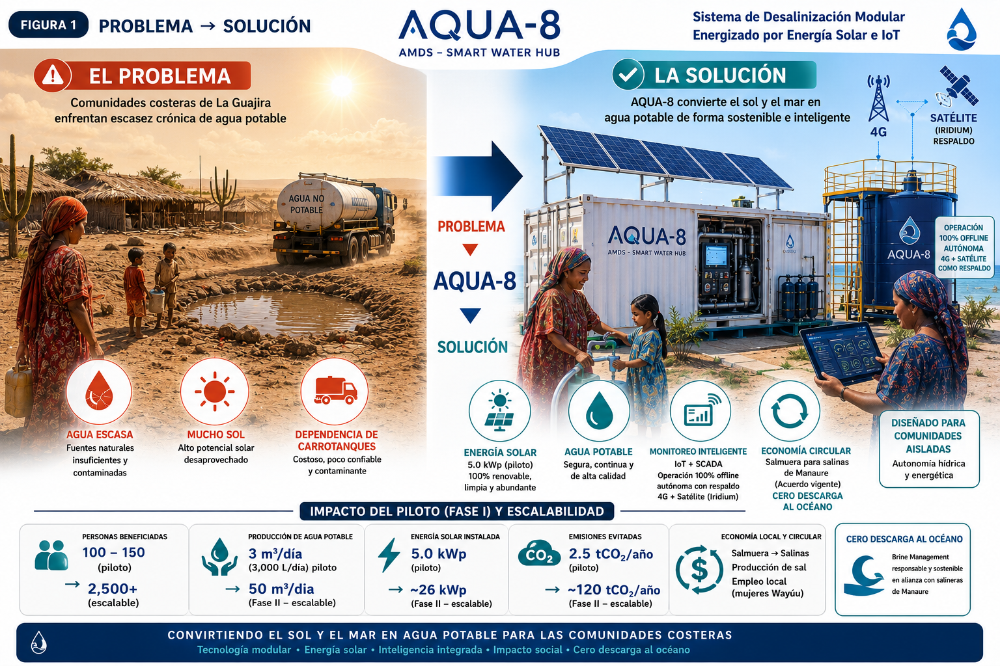

Autonomía Hídrica
para Comunidades Aisladas
AQUA-8 no es una planta desalinizadora. Es una plataforma tecnológica modular que integra ingeniería de procesos, energía renovable, automatización industrial y gestión inteligente del agua en un sistema escalable y fabricable.

Open Engineering
Cada cálculo, decisión, plano, simulación y documento está versionado y trazable. No almacenamos solo código; almacenamos conocimiento.
Ingeniería de Procesos
Diseño completo del sistema de tratamiento de agua marina mediante ósmosis inversa, con pre-tratamiento UF, post-tratamiento UV y remineralización.
Energía Renovable
Sistema fotovoltaico de ~12 kWp con inversor híbrido, diseñado para operación 100% solar sin dependencia de red eléctrica.
Automatización Industrial
PLC + HMI local con SCADA básico, sensores de presión, conductividad, ORP, pH y flujo para monitoreo en tiempo real.
Gestión Inteligente
Dashboard web AQUA-CLOUD para monitoreo remoto, AQUA-CORE para lógica de control y AQUA-AI para predicción de mantenimiento.
Diseño Modular
Contenedor marítimo 20' reacondicionado como núcleo del sistema. Fácil de transportar, instalar y replicar en cualquier comunidad costera.
Impacto Comunitario
Piloto en Manaure, La Guajira — una de las regiones más áridas de Colombia. Diseñado con y para la comunidad local.
Evaluación del Jurado
AQUA-8 responde directamente a los 6 criterios de evaluación del RELX Environmental Challenge 2026.
Plataforma Modular Open Engineering
Arquitectura LEGO industrial con contenedor 20', SCADA propio, AQUA-CORE/CLOUD/AI y recuperación de energía ERD. No hay sistema similar documentado como open source.
Cero Emisiones, Cero Salmuera al Mar
100% solar — evita 2.5 ton CO₂/año vs plantas diésel. Salmuera a economía circular (producción de sal). Sin baterías: VFD solar directo reduce residuos electrónicos.
Replicable en Cualquier Costa
Contenedores estandarizados: de 1 unidad (3,000 L/d) a N contenedores (escalable). Costo marginal decreciente. Manual de replicación open source incluido.
Ingeniería Validada y Versionada
Memorias de cálculo, P&IDs, ADRs, planos CAD y simulaciones publicadas en GitHub. Ciclo de vida completo documentado con trazabilidad ISO 9001.
$76,200 — el sistema más competitivo
Costo por L/día de $25.4 — menor que Fluence NIROBOX (\$40/L/d) y Elemental Watermakers (\$50/L/d). Opex de \$0.35/m³ vs mercado \$0.80-1.20.
Co-diseñado con la Comunidad Wayúu
Operadores locales capacitados, asistencia remota vía IoT, repuestos estándar disponibles en Colombia. Sin dependencia tecnológica externa a largo plazo.
Estructura de la Plataforma
Sistema de Gestión de Ingeniería (Engineering Management System) con trazabilidad completa.

Línea de Tiempo del Proyecto
Fase actual: Ingeniería Conceptual (FEED). Cierre de convocatoria RELX: 12 de julio de 2026.
¿Por qué La Guajira?
Manaure tiene la mayor tasa de mortalidad infantil por EDA del Caribe colombiano. 67% de los niños Wayúu presentan desnutrición crónica. El agua no es un lujo — es un derecho.
Conoce al Equipo AQUA-8
Cuatro profesionales con más de 80 años combinados de experiencia en ingeniería, comunidades indígenas y economía.
Alejandro Ochoa
20+ años en automatización, SCADA y energía solar. Arquitecto del sistema eléctrico de AQUA-8.
Rubén D. Botero
30+ años con el pueblo Wayúu. Consulta Previa, etnología y co-diseño comunitario participativo.
Hugo A. Isaza
Análisis de viabilidad, presupuesto y modelo de negocio para escalabilidad del proyecto.
Bertulfo Pérez
Evaluación de impacto, calidad de agua, manejo de salmuera y economía circular.
¿Quieres conocer más?
Explora cada módulo del sistema, revisa el presupuesto detallado y conoce el impacto del proyecto en Manaure.
Comenzar el Recorrido →